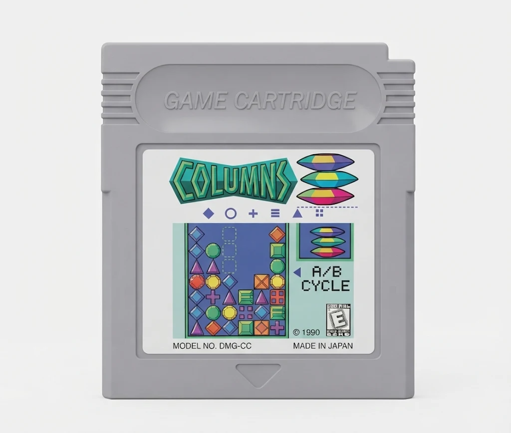
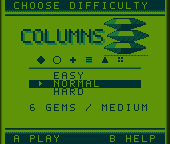
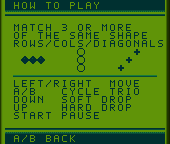
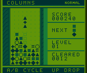

Game Boy homebrew
Columns
Match gems, trigger cascades, and keep the stack from reaching the top. A falling-gem puzzle for the original monochrome Game Boy.
- Single player
- 3 difficulties
- 32 KiB ROM

Screenshots



How to play
Move a falling trio and cycle its gems to match three or more of the same shape in a row, column, or diagonal. Matches clear, and the gems above them can fall into new matches.
- Easy
- Five shapes, slower fall
- Normal
- Six shapes, medium fall
- Hard
- Six shapes, faster fall
| Button | Action |
|---|---|
| ← → | Move the trio |
| A B | Cycle gems in opposite directions |
| ↓ | Soft drop |
| ↑ | Hard drop |
| Start | Pause or resume |
| Select | Return to the menu while paused |
Get the ROM
- Open the columns.gb file on GitHub.
- Select Download raw file above the file preview.
- Open
columns.gbin a Game Boy emulator.